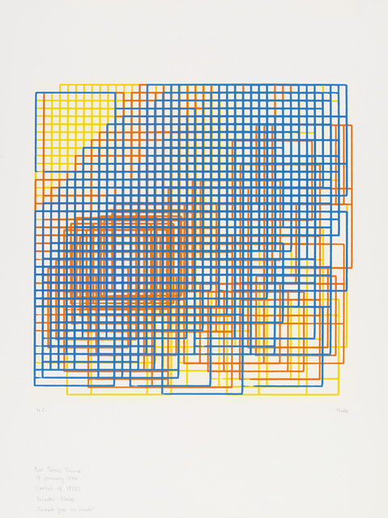
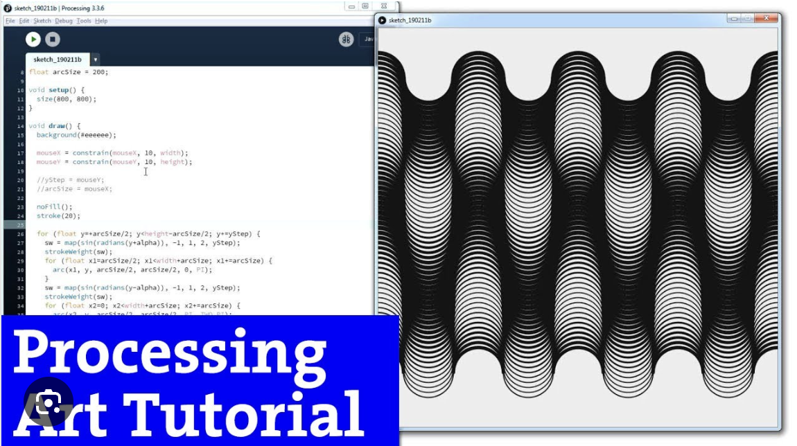

Project 3: Interaction
Write-Up
by Ecem Ozturk
Interactive Media:Web 501
OCAD Winter 2024
Interactive Art: Creative Coding as a Medium
In the realm of art making, the boundaries of creativity are continually expanding. As technological advancements continue to evolve, they have opened up new avenues for creative expression, blurring the boundaries between art, design, and technology for many individuals. One such avenue is creative coding, a practice that combines programming and art to create interactive and dynamic artworks. The history of creative coding for interactivity is a fascinating journey that has transformed the way we perceive and experience art.
Creative coding can trace its roots back to the early experiments with computer art in the 1950s and 1960s. Artists such as Frieder Nake and Harold Cohen began using computers to generate visual art, laying the groundwork for what would later become known as creative coding. Frieder Nake's Computer Generated Graphics and Harold Cohen's AARON program are early examples of artists using algorithms and code to create art autonomously.
Frieder Nake's code art was revolutionary for its time, as he pioneered the use of algorithms and computer programming to create visual artworks. Nake's approach to art was deeply rooted in mathematics and logic, and he viewed the computer as a tool for exploring the relationship between form, structure, and algorithmic processes. In his early works, Nake would write code that generated geometric shapes and patterns, often using simple algorithms to create complex and intricate designs. Unlike traditional artists who paint pixel by pixel, Nake's process involved writing code that dictated the rules and parameters for creating his artworks. This approach allowed Nake to create art that was not only visually striking but also conceptually rich, as the algorithms he used were a fundamental part of the artwork itself. Nake's work laid the foundation for what would later become known as algorithmic art, inspiring future generations of artists to explore the creative possibilities of code and computation.
However, it was not until the 1990s and the rise of the internet that creative coding truly began to flourish. The emergence of platforms like Processing and openFrameworks democratized creative coding, making it more accessible to artists and designers. These platforms provided tools and libraries that simplified the process of creating interactive artworks, allowing artists to focus on their creativity rather than the technicalities of programming.
One of the key developments in the history of creative coding was the shift towards using code as a medium for artistic expression. Artists began to see code not just as a tool for creating art, but as a form of art in itself. This shift led to the emergence of a new genre of art known as "code art," which is characterized by its use of code as the primary medium for artistic expression. Vera Molnár's Algorithmic Art is a notable example of this genre, featuring intricate geometric patterns and designs created using algorithms.
Today, creative coding continues to evolve, with artists pushing the boundaries of what is possible with code. From interactive installations to generative art, creative coding has become a powerful tool for artists seeking to engage audiences in new and innovative ways. John Whitney's Experimental Animation is a testament to the potential of creative coding to create groundbreaking visual experiences.

Most recently, Refik Anadol is another artist who has pushed the boundaries of creative coding, particularly in the realm of algorithmic art. Anadol's work transcends traditional artistic boundaries, blending art, science, and technology to create mesmerizing experiences that challenge our perceptions of space, time, and memory. His use of algorithms and machine learning algorithms to analyze and interpret large datasets has resulted in groundbreaking works such as "Machine Hallucination" and "Wind of Boston: Data Paintings.” The key technology behind "Machine Hallucination" is machine learning, specifically a type of machine learning called deep learning. Deep learning algorithms are trained on a dataset of images, in this case, images of New York City, to learn patterns and relationships within the data. Once trained, these algorithms can generate new images that mimic the style and content of the original dataset. In the context of "Machine Hallucination," the deep learning algorithms analyze the images of New York City to extract features such as shapes, colors, and textures. They then use these features to generate new images that blend elements from multiple images, creating a hallucinatory effect where buildings and structures seem to melt and morph into each other.
As technology continues to advance, creative coding will undoubtedly continue to play a crucial role in shaping the future of art. The early explorations of artists like Frieder Nake, Harold Cohen, Vera Molnár, and Refik Anadol have paved the way for a new era of artistic expression, one where the boundaries between art and technology are blurred, and the possibilities are endless. In conclusion, the history of creative coding for interactivity is a testament to the power of technology to inspire creativity and transform the way we experience art. From its humble beginnings to its current status as a respected art form, creative coding has come a long way. As we look to the future, one thing is clear – creative coding will continue to be a driving force in the world of art, pushing the boundaries of what is possible and inspiring new generations of artists to explore the possibilities of code.

press to go back to the index!